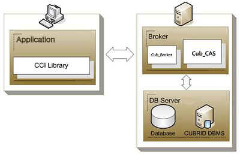
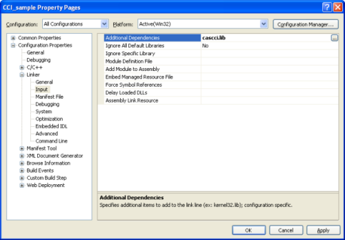

CCI Overview¶
CUBRID CCI (C Client Interface) driver implements an interface to enable access from C-based application to CUBRID database server through broker. It is also used as back-end infrastructure for creating tools (PHP, ODBC, etc.) which use the CAS application servers. In this environment, the CUBRID broker sends queries received from applications to a database and transfers the result to applications.
It is automatically installed upon CUBRID installation and can be found in the $CUBRID/lib directory. A header file as well as library files is required to use the driver.
| Windows | UNIX/Linux | |
|---|---|---|
| C header file | cci/include/cas_cci.h | cci/include/cas_cci.h |
| Static library | cci/lib/cascci.lib | cci/lib/libcascci.a |
| Dynamic library | cci/bin/cascci.dll | cci/lib/libcascci.so |
Note
- For Windows, Microsoft Visual C++ 2015 Redistributable (x86 or x64) must be installed to use the CCI Driver.
- From 11.2 Version, the path to the CCI driver has been changed. (cci/include, cci/lib, cci/bin)
Because CUBRID CCI driver is connected through the CUBRID broker, you can manage it the same way as other interfaces such as JDBC, PHP, ODBC, etc. In fact, CCI provides back-end infrastructure to implement PHP, ODBC, Python, and Ruby interfaces.
CCI Programming¶
Writing CCI Applications¶
The applications using CCI interact with CUBRID in the process of connecting to CAS, preparing queries, executing queries, handling response, and disconnecting. In each process, CCI communicates with applications through connection handle, query handle, and response handle.
The default value of auto-commit mode can be configured by using CCI_DEFAULT_AUTOCOMMIT which is a broker parameter. If it is omitted, the default value is set to ON. To change auto-commit mode within applications, you should use the cci_set_autocommit() function. If auto-commit mode is OFF, you should explicitly commit or roll back transactions by using the cci_end_tran() function.
General process for writing applications is as follows. For using the prepared statement, additional step binding data to a variable is required; the examples 1 and 2 show the way to implement this.
- Opening a database connection handle (related functions:
cci_connect(),cci_connect_with_url()) - Getting the request handle for the prepared statement (related function:
cci_prepare()) - Binding data to the prepared statement (related function:
cci_bind_param()) - Executing the prepared statement (related function:
cci_execute()) - Processing the execution result (related functions:
cci_cursor(),cci_fetch(),cci_get_data(),cci_get_result_info()) - Closing the request handle (related function:
cci_close_req_handle()) - Closing the database connection handle (related function:
cci_disconnect()) - Using database connection pool (related functions:
cci_property_create(),cci_property_destroy(),cci_property_set(),cci_datasource_create(),cci_datasource_destroy(),cci_datasource_borrow(),cci_datasource_release(),cci_datasource_change_property())
Note
- If you want to compile the CCI application on Windows, “WINDOWS” should be defined. Therefore, “-DWINDOWS” option should be defined on the compiler.
- The database connection in thread-based programming must be used independently each other.
- In autocommit mode, the transaction is not committed if all results are not fetched after running the SELECT statement. Therefore, although in autocommit mode, you should end the transaction by calling
cci_end_tran()if some error occurs during fetching for the resultset.
Example 1
// Example to execute a simple query
// In Linux: gcc -o simple simple.c -m64 -I${CUBRID}/cci/include -lnsl ${CUBRID}/cci/lib/libcascci.so -lpthread
#include <stdio.h>
#include "cas_cci.h"
#define BUFSIZE (1024)
int
main (void)
{
int con = 0, req = 0, col_count = 0, i, ind;
int error;
char *data;
T_CCI_ERROR cci_error;
T_CCI_COL_INFO *col_info;
T_CCI_CUBRID_STMT stmt_type;
char *query = "select * from code";
//getting a connection handle for a connection with a server
con = cci_connect ("localhost", 33000, "demodb", "dba", "");
if (con < 0)
{
printf ("cannot connect to database\n");
return 1;
}
//preparing the SQL statement
req = cci_prepare (con, query, 0, &cci_error);
if (req < 0)
{
printf ("prepare error: %d, %s\n", cci_error.err_code,
cci_error.err_msg);
goto handle_error;
}
//getting column information when the prepared statement is the SELECT query
col_info = cci_get_result_info (req, &stmt_type, &col_count);
if (col_info == NULL)
{
printf ("get_result_info error: %d, %s\n", cci_error.err_code,
cci_error.err_msg);
goto handle_error;
}
//Executing the prepared SQL statement
error = cci_execute (req, 0, 0, &cci_error);
if (error < 0)
{
printf ("execute error: %d, %s\n", cci_error.err_code,
cci_error.err_msg);
goto handle_error;
}
while (1)
{
//Moving the cursor to access a specific tuple of results
error = cci_cursor (req, 1, CCI_CURSOR_CURRENT, &cci_error);
if (error == CCI_ER_NO_MORE_DATA)
{
break;
}
if (error < 0)
{
printf ("cursor error: %d, %s\n", cci_error.err_code,
cci_error.err_msg);
goto handle_error;
}
//Fetching the query result into a client buffer
error = cci_fetch (req, &cci_error);
if (error < 0)
{
printf ("fetch error: %d, %s\n", cci_error.err_code,
cci_error.err_msg);
goto handle_error;
}
for (i = 1; i <= col_count; i++)
{
//Getting data from the fetched result
error = cci_get_data (req, i, CCI_A_TYPE_STR, &data, &ind);
if (error < 0)
{
printf ("get_data error: %d, %d\n", error, i);
goto handle_error;
}
printf ("%s\t|", data);
}
printf ("\n");
}
//Closing the request handle
error = cci_close_req_handle (req);
if (error < 0)
{
printf ("close_req_handle error: %d, %s\n", cci_error.err_code,
cci_error.err_msg);
goto handle_error;
}
//Disconnecting with the server
error = cci_disconnect (con, &cci_error);
if (error < 0)
{
printf ("error: %d, %s\n", cci_error.err_code, cci_error.err_msg);
goto handle_error;
}
return 0;
handle_error:
if (req > 0)
cci_close_req_handle (req);
if (con > 0)
cci_disconnect (con, &cci_error);
return 1;
}
Example 2
// Example to execute a query with a bind variable
// In Linux: gcc -o cci_bind cci_bind.c -m64 -I${CUBRID}/cci/include -lnsl ${CUBRID}/cci/lib/libcascci.so -lpthread
#include <stdio.h>
#include <string.h>
#include "cas_cci.h"
#define BUFSIZE (1024)
int
main (void)
{
int con = 0, req = 0, col_count = 0, i, ind;
int error;
char *data;
T_CCI_ERROR cci_error;
T_CCI_COL_INFO *col_info;
T_CCI_CUBRID_STMT stmt_type;
char *query = "select * from nation where name = ?";
char namebuf[128];
//getting a connection handle for a connection with a server
con = cci_connect ("localhost", 33000, "demodb", "dba", "");
if (con < 0)
{
printf ("cannot connect to database\n");
return 1;
}
//preparing the SQL statement
req = cci_prepare (con, query, 0, &cci_error);
if (req < 0)
{
printf ("prepare error: %d, %s\n", cci_error.err_code,
cci_error.err_msg);
goto handle_error;
}
//Binding date into a value
strcpy (namebuf, "Korea");
error =
cci_bind_param (req, 1, CCI_A_TYPE_STR, namebuf, CCI_U_TYPE_STRING,
CCI_BIND_PTR);
if (error < 0)
{
printf ("bind_param error: %d ", error);
goto handle_error;
}
//getting column information when the prepared statement is the SELECT query
col_info = cci_get_result_info (req, &stmt_type, &col_count);
if (col_info == NULL)
{
printf ("get_result_info error: %d, %s\n", cci_error.err_code,
cci_error.err_msg);
goto handle_error;
}
//Executing the prepared SQL statement
error = cci_execute (req, 0, 0, &cci_error);
if (error < 0)
{
printf ("execute error: %d, %s\n", cci_error.err_code,
cci_error.err_msg);
goto handle_error;
}
//Executing the prepared SQL statement
error = cci_execute (req, 0, 0, &cci_error);
if (error < 0)
{
printf ("execute error: %d, %s\n", cci_error.err_code,
cci_error.err_msg);
goto handle_error;
}
while (1)
{
//Moving the cursor to access a specific tuple of results
error = cci_cursor (req, 1, CCI_CURSOR_CURRENT, &cci_error);
if (error == CCI_ER_NO_MORE_DATA)
{
break;
}
if (error < 0)
{
printf ("cursor error: %d, %s\n", cci_error.err_code,
cci_error.err_msg);
goto handle_error;
}
//Fetching the query result into a client buffer
error = cci_fetch (req, &cci_error);
if (error < 0)
{
printf ("fetch error: %d, %s\n", cci_error.err_code,
cci_error.err_msg);
goto handle_error;
}
for (i = 1; i <= col_count; i++)
{
//Getting data from the fetched result
error = cci_get_data (req, i, CCI_A_TYPE_STR, &data, &ind);
if (error < 0)
{
printf ("get_data error: %d, %d\n", error, i);
goto handle_error;
}
if (ind == -1)
{
printf ("NULL\t");
}
else
{
printf ("%s\t|", data);
}
}
printf ("\n");
}
//Closing the request handle
error = cci_close_req_handle (req);
if (error < 0)
{
printf ("close_req_handle error: %d, %s\n", cci_error.err_code,
cci_error.err_msg);
goto handle_error;
}
//Disconnecting with the server
error = cci_disconnect (con, &cci_error);
if (error < 0)
{
printf ("error: %d, %s\n", cci_error.err_code, cci_error.err_msg);
goto handle_error;
}
return 0;
handle_error:
if (req > 0)
cci_close_req_handle (req);
if (con > 0)
cci_disconnect (con, &cci_error);
return 1;
}
Example 3
// Example to use connection/statement pool in CCI
// In Linux: gcc -o cci_pool cci_pool.c -m64 -I${CUBRID}/cci/include -lnsl ${CUBRID}/cci/lib/libcascci.so -lpthread
#include <stdio.h>
#include "cas_cci.h"
int main ()
{
T_CCI_PROPERTIES *ps = NULL;
T_CCI_DATASOURCE *ds = NULL;
T_CCI_ERROR err;
T_CCI_CONN cons;
int rc = 1, i;
ps = cci_property_create ();
if (ps == NULL)
{
fprintf (stderr, "Could not create T_CCI_PROPERTIES.\n");
rc = 0;
goto cci_pool_end;
}
cci_property_set (ps, "user", "dba");
cci_property_set (ps, "url", "cci:cubrid:localhost:33000:demodb:::");
cci_property_set (ps, "pool_size", "10");
cci_property_set (ps, "max_wait", "1200");
cci_property_set (ps, "pool_prepared_statement", "true");
cci_property_set (ps, "login_timeout", "300000");
cci_property_set (ps, "query_timeout", "3000");
ds = cci_datasource_create (ps, &err);
if (ds == NULL)
{
fprintf (stderr, "Could not create T_CCI_DATASOURCE.\n");
fprintf (stderr, "E[%d,%s]\n", err.err_code, err.err_msg);
rc = 0;
goto cci_pool_end;
}
for (i = 0; i < 3; i++)
{
cons = cci_datasource_borrow (ds, &err);
if (cons < 0)
{
fprintf (stderr,
"Could not borrow a connection from the data source.\n");
fprintf (stderr, "E[%d,%s]\n", err.err_code, err.err_msg);
continue;
}
// put working code here.
cci_work (cons);
cci_datasource_release (ds, cons, &err);
}
cci_pool_end:
cci_property_destroy (ps);
cci_datasource_destroy (ds);
return 0;
}
// working code
int cci_work (T_CCI_CONN con)
{
T_CCI_ERROR err;
char sql[4096];
int req, res, error, ind;
int data;
cci_set_autocommit (con, CCI_AUTOCOMMIT_TRUE);
cci_set_lock_timeout (con, 100, &err);
cci_set_isolation_level (con, TRAN_REP_CLASS_COMMIT_INSTANCE, &err);
error = 0;
snprintf (sql, 4096, "SELECT host_year FROM record WHERE athlete_code=11744");
req = cci_prepare (con, sql, 0, &err);
if (req < 0)
{
printf ("prepare error: %d, %s\n", err.err_code, err.err_msg);
return error;
}
res = cci_execute (req, 0, 0, &err);
if (res < 0)
{
printf ("execute error: %d, %s\n", err.err_code, err.err_msg);
goto cci_work_end;
}
while (1)
{
error = cci_cursor (req, 1, CCI_CURSOR_CURRENT, &err);
if (error == CCI_ER_NO_MORE_DATA)
{
break;
}
if (error < 0)
{
printf ("cursor error: %d, %s\n", err.err_code, err.err_msg);
goto cci_work_end;
}
error = cci_fetch (req, &err);
if (error < 0)
{
printf ("fetch error: %d, %s\n", err.err_code, err.err_msg);
goto cci_work_end;
}
error = cci_get_data (req, 1, CCI_A_TYPE_INT, &data, &ind);
if (error < 0)
{
printf ("get data error: %d\n", error);
goto cci_work_end;
}
printf ("%d\n", data);
}
error = 1;
cci_work_end:
cci_close_req_handle (req);
return error;
}
Configuring Library¶
Once you have written applications using CCI, you should decide, according to its features, whether to execute CCI as static or dynamic link before you build it. See the table in CCI Overview to decide which library will be used.
The following is an example of Makefile, which makes a link by using the dynamic library on UNIX/Linux.
CC=gcc
CFLAGS = -g -Wall -I. -I$(CUBRID)/cci/include
LDFLAGS = -L$(CUBRID)/cci/lib -lcascci -lnsl
TEST_OBJS = test.o
EXES = test
all: $(EXES)
test: $(TEST_OBJS)
$(CC) -o $@ $(TEST_OBJS) $(LDFLAGS)
The following image shows configuration to use static library on Windows.
Using BLOB/CLOB¶
Storing LOB Data
You can create LOB data file and bind the data by using the functions below in CCI applications.
- Creating LOB data files (related functions:
cci_blob_new(),cci_blob_write()) - Binding LOB data (related function:
cci_bind_param()) - Freeing memory for LOB struct (related function:
cci_blob_free())
Example
int con = 0; /* connection handle */
int req = 0; /* request handle */
int res;
int n_executed;
int i;
T_CCI_ERROR error;
T_CCI_BLOB blob = NULL;
char data[1024] = "bulabula";
con = cci_connect ("localhost", 33000, "tdb", "PUBLIC", "");
if (con < 0) {
goto handle_error;
}
req = cci_prepare (con, "insert into doc (doc_id, content) values (?,?)", 0, &error);
if (req< 0)
{
goto handle_error;
}
res = cci_bind_param (req, 1 /* binding index*/, CCI_A_TYPE_STR, "doc-10", CCI_U_TYPE_STRING, CCI_BIND_PTR);
/* Creating an empty LOB data file */
res = cci_blob_new (con, &blob, &error);
res = cci_blob_write (con, blob, 0 /* start position */, 1024 /* length */, data, &error);
/* Binding BLOB data */
res = cci_bind_param (req, 2 /* binding index*/, CCI_A_TYPE_BLOB, (void *)blob, CCI_U_TYPE_BLOB, CCI_BIND_PTR);
n_executed = cci_execute (req, 0, 0, &error);
if (n_executed < 0)
{
goto handle_error;
}
/* Commit */
if (cci_end_tran(con, CCI_TRAN_COMMIT, &error) < 0)
{
goto handle_error;
}
/* Memory free */
cci_blob_free(blob);
return 0;
handle_error:
if (blob != NULL)
{
cci_blob_free(blob);
}
if (req > 0)
{
cci_close_req_handle (req);
}
if (con > 0)
{
cci_disconnect(con, &error);
}
return -1;
Retrieving LOB Data
You can retrieve LOB data by using the following functions in CCI applications. Note that if you enter data in the LOB type column, the actual LOB data is stored in the file located in external storage and Locator value is stored in the LOB type column. Thus, to retrieve the LOB data stored in the file, you should call the cci_blob_read() function but the cci_get_data() function.
- Retrieving meta data (Locator) in the the LOB type column (related function:
cci_get_data()) - Retrieving the LOB data (related function:
cci_blob_read()) - Freeing memory for the LOB struct: (related function:
cci_blob_free())
Example
int con = 0; /* connection handle */
int req = 0; /* request handle */
int ind; /* NULL indicator, 0 if not NULL, -1 if NULL*/
int res;
int i;
T_CCI_ERROR error;
T_CCI_BLOB blob;
char buffer[1024];
con = cci_connect ("localhost", 33000, "image_db", "PUBLIC", "");
if (con < 0)
{
goto handle_error;
}
req = cci_prepare (con, "select content from doc_t", 0 /*flag*/, &error);
if (req< 0)
{
goto handle_error;
}
res = cci_execute (req, 0/*flag*/, 0/*max_col_size*/, &error);
while (1) {
res = cci_cursor (req, 1/* offset */, CCI_CURSOR_CURRENT/* cursor position */, &error);
if (res == CCI_ER_NO_MORE_DATA)
{
break;
}
res = cci_fetch (req, &error);
/* Fetching CLOB Locator */
res = cci_get_data (req, 1 /* colume index */, CCI_A_TYPE_BLOB,
(void *)&blob /* BLOB handle */, &ind /* NULL indicator */);
/* Fetching CLOB data */
res = cci_blob_read (con, blob, 0 /* start position */, 1024 /* length */, buffer, &error);
printf ("content = %s\n", buffer);
}
/* Memory free */
cci_blob_free(blob);
res=cci_close_req_handle(req);
res = cci_disconnect (con, &error);
return 0;
handle_error:
if (req > 0)
{
cci_close_req_handle (req);
}
if (con > 0)
{
cci_disconnect(con, &error);
}
return -1;
CCI Error Codes and Error Messages¶
CCI API functions return a negative number as CCI or CAS (broker application server) error codes when an error occurs. The CCI error codes occur in CCI API functions and CAS error codes occur in CAS.
- All error codes are negative.
- All error codes and error messages of functions which have “T_CCI_ERROR err_buf” as a parameter can be found on err_buf.err_code and err_buf.err_msg.
- All error messages of functions which have no “T_CCI_ERROR err_buf” as a parameter can output by using
cci_get_err_msg(). - If the value of error code is between -20002 and -20999, it is caused by CCI API functions.
- If the value of error code is between -10000 and -10999, it is caused by CAS and transferred by CCI API functions. For CAS errors, see CAS Error.
- If the value of error code is CCI_ER_DBMS (-20001), it is caused by database server. You can check server error codes in err_buf.err_code of the database error buffer (err_buf). For database server errors, see Database Server Errors.
Warning
If an error occurs in server, the value of CCI_ER_DBMS, which is error code returned by a function may be different from the value of the err_buf.err_code. Except server errors, every error code stored in err_buf is identical to that returned by a function.
Note
CCI and CAS error codes have different values between the earlier version of CUBRID 9.0 and the version of CUBRID 9.0 or later. Therefore, the users who developed the applications by using the error code names must recompile them and the users who developed them by directly assigning error code numbers must recompile them after changing the number values.
The database error buffer (err_buf) is a struct variable of T_CCI_ERROR defined in the cas_cci.h header file. For how to use it, see the example below.
CCI error codes which starting with CCI_ER are defined in enum called T_CCI_ERROR_CODE under the $CUBRID/include/cas_cci.h file. Therefore, to use this error code name in program code, you should include a header file in the upper side of code by entering #include “cas_cci.h”.
The following example shows how to display error messages. In the example, the error code value (req) returned by cci_prepare() is CCI_ER_DBMS. -493 (server error code) is stored in cci_error.err_code
and the error message, ‘Syntax: Unknown class “notable”. select * from notable’ is stored in cci_error.err_msg of the database error buffer.
// gcc -o err err.c -m64 -I${CUBRID}/cci/include -lnsl ${CUBRID}/cci/lib/libcascci.so -lpthread
#include <stdio.h>
#include "cas_cci.h"
#define BUFSIZE (1024)
int
main (void)
{
int con = 0, req = 0, col_count = 0, i, ind;
int error;
char *data;
T_CCI_ERROR err_buf;
char *query = "select * from notable";
//getting a connection handle for a connection with a server
con = cci_connect ("localhost", 33000, "demodb", "dba", "");
if (con < 0)
{
printf ("cannot connect to database\n");
return 1;
}
//preparing the SQL statement
req = cci_prepare (con, query, 0, &err_buf);
if (req < 0)
{
if (req == CCI_ER_DBMS)
{
printf ("error from server: %d, %s\n", err_buf.err_code, err_buf.err_msg);
}
else
{
printf ("error from cci or cas: %d, %s\n", err_buf.err_code, err_buf.err_msg);
}
goto handle_error;
}
// ...
}
The following list shows CCI error codes. For CAS errors, see CAS Error.
| Error Code (Error Number) | Error Message | Note |
|---|---|---|
| CCI_ER_DBMS (-20001) | CUBRID DBMS Error | Error codes returned by functions when an error occurs in server. The causes of the error can be checked with err_code and err_msg stored in the T_CCI_ERROR struct. |
| CCI_ER_CON_HANDLE (-20002) | Invalid connection handle | |
| CCI_ER_NO_MORE_MEMORY (-20003) | Memory allocation error | Insufficient memory |
| CCI_ER_COMMUNICATION (-20004) | Cannot communicate with server | |
| CCI_ER_NO_MORE_DATA (-20005) | Invalid cursor position | |
| CCI_ER_TRAN_TYPE (-20006) | Unknown transaction type | |
| CCI_ER_STRING_PARAM (-20007) | Invalid string argument | An error occurred when sql_stmt is NULL in cci_prepare(), and cci_prepare_and_execute() |
| CCI_ER_TYPE_CONVERSION (-20008) | Type conversion error | Cannot convert the given value into an actual data type. |
| CCI_ER_BIND_INDEX (-20009) | Parameter index is out of range | Index that binds data is not valid. |
| CCI_ER_ATYPE (-20010) | Invalid T_CCI_A_TYPE value | |
| CCI_ER_NOT_BIND (-20011) | Not available | |
| CCI_ER_PARAM_NAME (-20012) | Invalid T_CCI_DB_PARAM value | |
| CCI_ER_COLUMN_INDEX (-20013) | Column index is out of range | |
| CCI_ER_SCHEMA_TYPE (-20014) | Not available | |
| CCI_ER_FILE (-20015) | Cannot open file | Fails to open/read/write a file. |
| CCI_ER_CONNECT (-20016) | Cannot connect to CUBRID CAS | Cannot connect to CUBRID CAS |
| CCI_ER_ALLOC_CON_HANDLE (-20017) | Cannot allocate connection handle % | |
| CCI_ER_REQ_HANDLE (-20018) | Cannot allocate request handle % | |
| CCI_ER_INVALID_CURSOR_POS (-20019) | Invalid cursor position | |
| CCI_ER_OBJECT (-20020) | Invalid oid string | |
| CCI_ER_CAS (-20021) | Not available | |
| CCI_ER_HOSTNAME (-20022) | Unknown host name | |
| CCI_ER_OID_CMD (-20023) | Invalid T_CCI_OID_CMD value | |
| CCI_ER_BIND_ARRAY_SIZE (-20024) | Array binding size is not specified | |
| CCI_ER_ISOLATION_LEVEL (-20025) | Unknown transaction isolation level | |
| CCI_ER_SET_INDEX (-20026) | Invalid set index | Invalid index is specified when a set element in the T_CCI_SET struct is retrieved. |
| CCI_ER_DELETED_TUPLE (-20027) | Current row was deleted % | |
| CCI_ER_SAVEPOINT_CMD (-20028) | Invalid T_CCI_SAVEPOINT_CMD value | Invalid T_CCI_SAVEPOINT_CMD value is used as an argument of the cci_savepoint() function. |
| CCI_ER_THREAD_RUNNING(-20029) | Invalid T_CCI_SAVEPOINT_CMD value | Invalid T_CCI_SAVEPOINT_CMD value is used as an argument of the cci_savepoint() function. |
| CCI_ER_INVALID_URL (-20030) | Invalid url string | |
| CCI_ER_INVALID_LOB_READ_POS (-20031) | Invalid lob read position | |
| CCI_ER_INVALID_LOB_HANDLE (-20032) | Invalid lob handle | |
| CCI_ER_NO_PROPERTY (-20033) | Could not find a property | |
| CCI_ER_PROPERTY_TYPE (-20034) | Invalid property type | |
| CCI_ER_INVALID_DATASOURCE (-20035) | Invalid CCI datasource | |
| CCI_ER_DATASOURCE_TIMEOUT (-20036) | All connections are used | |
| CCI_ER_DATASOURCE_TIMEDWAIT (-20037) | pthread_cond_timedwait error | |
| CCI_ER_LOGIN_TIMEOUT (-20038) | Connection timed out | |
| CCI_ER_QUERY_TIMEOUT (-20039) | Request timed out | |
| CCI_ER_RESULT_SET_CLOSED (-20040) | ||
| CCI_ER_INVALID_HOLDABILITY (-20041) | Invalid holdability mode. The only accepted values are 0 or 1 | |
| CCI_ER_NOT_UPDATABLE (-20042) | Request handle is not updatable | |
| CCI_ER_INVALID_ARGS (-20043) | Invalid argument | |
| CCI_ER_USED_CONNECTION (-20044) | This connection is used already. |
C Type Definition
The following shows the structs used in CCI API functions.
| Name | Type | Member | Description |
|---|---|---|---|
| T_CCI_ERROR | struct | char err_msg[1024] | Representation of database error info |
| int err_code | |||
| T_CCI_BIT | struct | int size | Representation of bit type |
| char *buf | |||
| T_CCI_DATE | struct | short yr | Representation of datetime, timestamp, date, and time type |
| short mon | |||
| short day | |||
| short hh | |||
| short mm | |||
| short ss | |||
| short ms | |||
| T_CCI_DATE_TZ | struct | short yr | Representation of date/time types with timezone |
| short mon | |||
| short day | |||
| short hh | |||
| short mm | |||
| short ss | |||
| short ms | |||
| char tz[64] | |||
| T_CCI_SET | void* | Representation of set type | |
| T_CCI_COL_INFO | struct | T_CCI_U_EXT_TYPE type | Representation of column information for the SELECT statement |
| char is_non_null | |||
| short scale | |||
| int precision | |||
| char *col_name | |||
| char *real_attr | |||
| char *class_name | |||
| T_CCI_QUERY_RESULT | struct | int result_count | Results of batch execution |
| int stmt_type | |||
| char *err_msg | |||
| char oid[32] | |||
| T_CCI_PARAM_INFO | struct | T_CCI_PARAM_MODE mode | Representation of input parameter info |
| T_CCI_U_EXT_TYPE type | |||
| short scale | |||
| int precision | |||
| T_CCI_U_EXT_TYPE | unsigned char | Database type info | |
| T_CCI_U_TYPE | enum | CCI_U_TYPE_UNKNOWN | Database type info |
| CCI_U_TYPE_NULL | |||
| CCI_U_TYPE_CHAR | |||
| CCI_U_TYPE_STRING | |||
| CCI_U_TYPE_BIT | |||
| CCI_U_TYPE_VARBIT | |||
| CCI_U_TYPE_NUMERIC | |||
| CCI_U_TYPE_INT | |||
| CCI_U_TYPE_SHORT | |||
| CCI_U_TYPE_FLOAT | |||
| CCI_U_TYPE_DOUBLE | |||
| CCI_U_TYPE_DATE | |||
| CCI_U_TYPE_TIME | |||
| CCI_U_TYPE_TIMESTAMP | |||
| CCI_U_TYPE_SET | |||
| CCI_U_TYPE_MULTISET | |||
| CCI_U_TYPE_SEQUENCE | |||
| CCI_U_TYPE_OBJECT | |||
| CCI_U_TYPE_BIGINT | |||
| CCI_U_TYPE_DATETIME | |||
| CCI_U_TYPE_BLOB | |||
| CCI_U_TYPE_CLOB | |||
| CCI_U_TYPE_ENUM | |||
| CCI_U_TYPE_UINT | |||
| CCI_U_TYPE_USHORT | |||
| CCI_U_TYPE_UBIGINT | |||
| CCI_U_TYPE_TIMESTAMPTZ | |||
| CCI_U_TYPE_TIMESTAMPLTZ | |||
| CCI_U_TYPE_DATETIMETZ | |||
| CCI_U_TYPE_DATETIMELTZ | |||
| T_CCI_A_TYPE | enum | CCI_A_TYPE_STR | Representation of type info used in API |
| CCI_A_TYPE_INT | |||
| CCI_A_TYPE_FLOAT | |||
| CCI_A_TYPE_DOUBLE | |||
| CCI_A_TYPE_BIT | |||
| CCI_A_TYPE_DATE | |||
| CCI_A_TYPE_SET | |||
| CCI_A_TYPE_BIGINT | |||
| CCI_A_TYPE_BLOB | |||
| CCI_A_TYPE_CLOB | |||
| CCI_A_TYPE_CLOB | |||
| CCI_A_TYPE_REQ_HANDLE | |||
| CCI_A_TYPE_UINT | |||
| CCI_A_TYPE_UBIGINT | |||
| CCI_A_TYPE_DATE_TZ | |||
| CCI_A_TYPE_UINT | |||
| T_CCI_DB_PARAM | enum | CCI_PARAM_ISOLATION_LEVEL | System parameter names |
| CCI_PARAM_LOCK_TIMEOUT | |||
| CCI_PARAM_MAX_STRING_LENGTH | |||
| CCI_PARAM_AUTO_COMMIT | |||
| T_CCI_SCH_TYPE | enum | CCI_SCH_CLASS | |
| CCI_SCH_VCLASS | |||
| CCI_SCH_QUERY_SPEC | |||
| CCI_SCH_ATTRIBUTE | |||
| CCI_SCH_CLASS_ATTRIBUTE | |||
| CCI_SCH_METHOD | |||
| CCI_SCH_CLASS_METHOD | |||
| CCI_SCH_METHOD_FILE | |||
| CCI_SCH_SUPERCLASS | |||
| CCI_SCH_SUBCLASS | |||
| CCI_SCH_CONSTRAIT | |||
| CCI_SCH_TRIGGER | |||
| CCI_SCH_CLASS_PRIVILEGE | |||
| CCI_SCH_ATTR_PRIVILEGE | |||
| CCI_SCH_DIRECT_SUPER_CLASS | |||
| CCI_SCH_PRIMARY_KEY | |||
| CCI_SCH_IMPORTED_KEYS | |||
| CCI_SCH_EXPORTED_KEYS | |||
| CCI_SCH_CROSS_REFERENCE | |||
| T_CCI_CUBRID_STMT | enum | CUBRID_STMT_ALTER_CLASS | |
| CUBRID_STMT_ALTER_SERIAL | |||
| CUBRID_STMT_COMMIT_WORK | |||
| CUBRID_STMT_REGISTER_DATABASE | |||
| CUBRID_STMT_CREATE_CLASS | |||
| CUBRID_STMT_CREATE_INDEX | |||
| CUBRID_STMT_CREATE_TRIGGER | |||
| CUBRID_STMT_CREATE_SERIAL | |||
| CUBRID_STMT_DROP_DATABASE | |||
| CUBRID_STMT_DROP_CLASS | |||
| CUBRID_STMT_DROP_INDEX | |||
| CUBRID_STMT_DROP_LABEL | |||
| CUBRID_STMT_DROP_TRIGGER | |||
| CUBRID_STMT_DROP_SERIAL | |||
| CUBRID_STMT_EVALUATE | |||
| CUBRID_STMT_RENAME_CLASS | |||
| CUBRID_STMT_ROLLBACK_WORK | |||
| CUBRID_STMT_GRANT | |||
| CUBRID_STMT_REVOKE | |||
| CUBRID_STMT_STATISTICS | |||
| CUBRID_STMT_INSERT | |||
| CUBRID_STMT_SELECT | |||
| CUBRID_STMT_UPDATE | |||
| CUBRID_STMT_DELETE | |||
| CUBRID_STMT_CALL | |||
| CUBRID_STMT_GET_ISO_LVL | |||
| CUBRID_STMT_GET_TIMEOUT | |||
| CUBRID_STMT_GET_OPT_LVL | |||
| CUBRID_STMT_SET_OPT_LVL | |||
| CUBRID_STMT_SCOPE | |||
| CUBRID_STMT_GET_TRIGGER | |||
| CUBRID_STMT_SET_TRIGGER | |||
| CUBRID_STMT_SAVEPOINT | |||
| CUBRID_STMT_PREPARE | |||
| CUBRID_STMT_ATTACH | |||
| CUBRID_STMT_USE | |||
| CUBRID_STMT_REMOVE_TRIGGER | |||
| CUBRID_STMT_RENAME_TRIGGER | |||
| CUBRID_STMT_ON_LDB | |||
| CUBRID_STMT_GET_LDB | |||
| CUBRID_STMT_SET_LDB | |||
| CUBRID_STMT_GET_STATS | |||
| CUBRID_STMT_CREATE_USER | |||
| CUBRID_STMT_DROP_USER | |||
| CUBRID_STMT_ALTER_USER | |||
| CUBRID_STMT_SET_SYS_PARAMS | |||
| CUBRID_STMT_ALTER_INDEX | |||
| CUBRID_STMT_CREATE_STORED_PROCEDURE | |||
| CUBRID_STMT_DROP_STORED_PROCEDURE | |||
| CUBRID_STMT_PREPARE_STATEMENT | |||
| CUBRID_STMT_EXECUTE_PREPARE | |||
| CUBRID_STMT_DEALLOCATE_PREPARE | |||
| CUBRID_STMT_TRUNCATE | |||
| CUBRID_STMT_DO | |||
| CUBRID_STMT_SELECT_UPDATE | |||
| CUBRID_STMT_SET_SESSION_VARIABLES | |||
| CUBRID_STMT_DROP_SESSION_VARIABLES | |||
| CUBRID_STMT_MERGE | |||
| CUBRID_STMT_SET_NAMES | |||
| CUBRID_STMT_ALTER_STORED_PROCEDURE | |||
| CUBRID_STMT_KILL | |||
| T_CCI_CURSOR_POS | enum | CCI_CURSOR_FIRST | |
| CCI_CURSOR_CURRENT | |||
| CCI_CURSOR_LAST | |||
| T_CCI_TRAN_ISOLATION | enum | TRAN_READ_COMMITTED | |
| TRAN_REPEATABLE_READ | |||
| TRAN_SERIALIZABLE | |||
| T_CCI_PARAM_MODE | enum | CCI_PARAM_MODE_UNKNOWN | |
| CCI_PARAM_MODE_IN | |||
| CCI_PARAM_MODE_OUT | |||
| CCI_PARAM_MODE_INOUT |
Note
If a string longer than defined max length is inserted (INSERT) or updated (UPDATE), the string will be truncated.
CCI Sample Program¶
The sample program shows how to write a CCI application by using the demodb database which is included with the CUBRID installation package. You can practice the ways to connect to CAS, prepare queries, execute queries, handle response, disconnect from CAS, etc. by following sample program below. In the sample program, the dynamic link on Linux environment is used.
The code below shows information about olympic table schema in the demodb database which is used for sample program.
csql> ;sc olympic
=== <Help: Schema of a Class> ===
<Class Name>
olympic
<Attributes>
host_year INTEGER NOT NULL
host_nation CHARACTER VARYING(40) NOT NULL
host_city CHARACTER VARYING(20) NOT NULL
opening_date DATE NOT NULL
closing_date DATE NOT NULL
mascot CHARACTER VARYING(20)
slogan CHARACTER VARYING(40)
introduction CHARACTER VARYING(1500)
<Constraints>
PRIMARY KEY pk_olympic_host_year ON olympic (host_year)
Preparing
Make sure that the demodb database and the broker are running before you execute the sample program. You can start the demodb database and the broker by executing the cubrid utility. The code below shows how to run a database server and broker by executing the cubrid utility.
[tester@testdb ~]$ cubrid server start demodb
@ cubrid master start
++ cubrid master start: success
@ cubrid server start: demodb
This may take a long time depending on the amount of recovery works to do.
CUBRID 9.2
++ cubrid server start: success
[tester@testdb ~]$ cubrid broker start
@ cubrid broker start
++ cubrid broker start: success
Building
With the program source and the Makefile prepared, executing make will create an executable file named test. If you use a static library, there is no need to deploy additional files and the execution will be faster. However, it increases the program size and memory usage. If you use a dynamic library, there will be some performance overhead but the program size and memory usage can be optimized.
The code below a command line that makes a test program build by using a dynamic library instead of using make on Linux.
cc -o test test.c -I$CUBRID/cci/include -L$CUBRID/cci/lib -lnsl -lcascci
Sample Code
#include <stdio.h>
#include <cas_cci.h>
char *cci_client_name = "test";
int main (int argc, char *argv[])
{
int con = 0, req = 0, col_count = 0, res, ind, i;
T_CCI_ERROR error;
T_CCI_COL_INFO *res_col_info;
T_CCI_CUBRID_STMT stmt_type;
char *buffer, db_ver[16];
printf("Program started!\n");
if ((con=cci_connect("localhost", 30000, "demodb", "PUBLIC", ""))<0) {
printf( "%s(%d): cci_connect fail\n", __FILE__, __LINE__);
return -1;
}
if ((res=cci_get_db_version(con, db_ver, sizeof(db_ver)))<0) {
printf( "%s(%d): cci_get_db_version fail\n", __FILE__, __LINE__);
goto handle_error;
}
printf("DB Version is %s\n",db_ver);
if ((req=cci_prepare(con, "select * from event", 0,&error))<0) {
if (req < 0) {
printf( "%s(%d): cci_prepare fail(%d)\n", __FILE__, __LINE__,error.err_code);
}
goto handle_error;
}
printf("Prepare ok!(%d)\n",req);
res_col_info = cci_get_result_info(req, &stmt_type, &col_count);
if (!res_col_info) {
printf( "%s(%d): cci_get_result_info fail\n", __FILE__, __LINE__);
goto handle_error;
}
printf("Result column information\n"
"========================================\n");
for (i=1; i<=col_count; i++) {
printf("name:%s type:%d(precision:%d scale:%d)\n",
CCI_GET_RESULT_INFO_NAME(res_col_info, i),
CCI_GET_RESULT_INFO_TYPE(res_col_info, i),
CCI_GET_RESULT_INFO_PRECISION(res_col_info, i),
CCI_GET_RESULT_INFO_SCALE(res_col_info, i));
}
printf("========================================\n");
if ((res=cci_execute(req, 0, 0, &error))<0) {
if (req < 0) {
printf( "%s(%d): cci_execute fail(%d)\n", __FILE__, __LINE__,error.err_code);
}
goto handle_error;
}
while (1) {
res = cci_cursor(req, 1, CCI_CURSOR_CURRENT, &error);
if (res == CCI_ER_NO_MORE_DATA) {
printf("Query END!\n");
break;
}
if (res<0) {
if (req < 0) {
printf( "%s(%d): cci_cursor fail(%d)\n", __FILE__, __LINE__,error.err_code);
}
goto handle_error;
}
if ((res=cci_fetch(req, &error))<0) {
if (res < 0) {
printf( "%s(%d): cci_fetch fail(%d)\n", __FILE__, __LINE__,error.err_code);
}
goto handle_error;
}
for (i=1; i<=col_count; i++) {
if ((res=cci_get_data(req, i, CCI_A_TYPE_STR, &buffer, &ind))<0) {
printf( "%s(%d): cci_get_data fail\n", __FILE__, __LINE__);
goto handle_error;
}
printf("%s \t|", buffer);
}
printf("\n");
}
if ((res=cci_close_req_handle(req))<0) {
printf( "%s(%d): cci_close_req_handle fail", __FILE__, __LINE__);
goto handle_error;
}
if ((res=cci_disconnect(con, &error))<0) {
if (res < 0) {
printf( "%s(%d): cci_disconnect fail(%d)", __FILE__, __LINE__,error.err_code);
}
goto handle_error;
}
printf("Program ended!\n");
return 0;
handle_error:
if (req > 0)
cci_close_req_handle(req);
if (con > 0)
cci_disconnect(con, &error);
printf("Program failed!\n");
return -1;
}